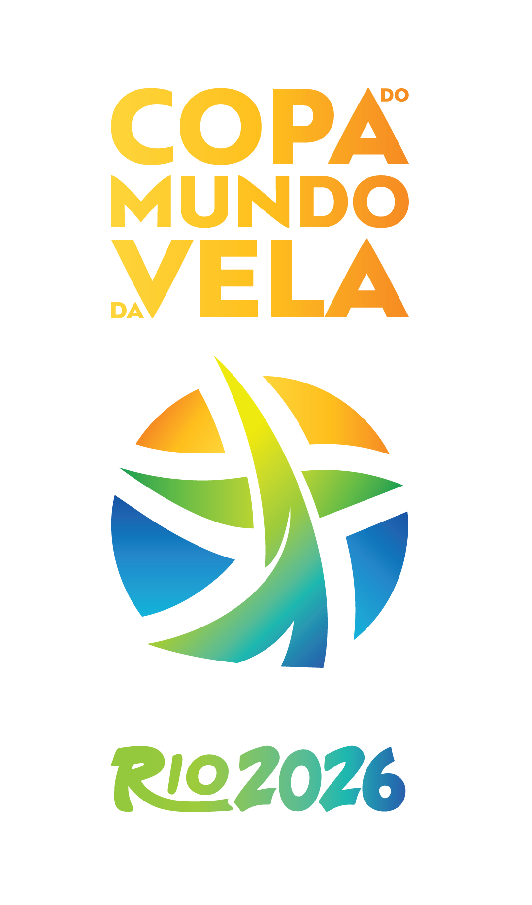

DRAW 1DRAW 2DRAW 3
1st2nd
Event
See all events
National teams · Nations vs nations
18 Nov - 13 Dec 2026
SSL Gold Cup Rio 2026
Marina da Glória, Rio de Janeiro, Brazil
- Nations
- 40
- SSL points
- 1000
- Class
- SSL 47
- Format
- National teams
- Venue
- Marina da Glória
Organisers
Partners

- Partner
Matchboard
Dev preview
Qualifying Series
Qualifying Series
AsiaDec ’25 | Thailand
QS A
QS B
Africa & Oceania2-4 Jun ’26 | Switzerland
QS C
Europe8-11 Jun & 14-17 Jul ’26 | Switzerland
QS D
QS E
QS F
QS G
Pan-America12-16 Nov ’26 | Brazil
QS H
QS I
QS J
Final Series
1/32 Finals19 - 22 Nov
DRAW 4DRAW 5
1st2nd
DRAW 6DRAW 7DRAW 8
1st2nd
DRAW 9DRAW 10DRAW 11
1st2nd
1/16 Finals26 - 29 Nov
R1 C1R1 B2
1st2nd
R1 A1R1 C2
1st2nd
R1 D2R1 B1
1st2nd
R1 A2R1 D1
1st2nd
1/8 Finals2 - 5 Dec
R2 B1R2 A2
1st2nd
R2 D1R2 B2
1st2nd
R2 C2R2 A1
1st2nd
R2 D2R2 C1
1st2nd
Quarterfinals7 - 10 Dec
EF A1EF D2
1st2nd
EF C1EF A2
1st2nd
EF B2EF D1
1st2nd
EF C2EF B1
1st2nd
Semifinals12 Dec
QF A1QF C1QF B2QF D2
1st2nd
QF C2QF A2QF D1QF B1
1st2nd
Final13 Dec
SF A1SF A2SF B2SF B1
SF A3SF A4SF B4SF B3
Qualifying Series
AsiaDec ’25 | Thailand
QS A
QS B
Africa & Oceania2-4 Jun ’26 | Switzerland
QS C
Europe8-11 Jun & 14-17 Jul ’26 | Switzerland
QS D
QS E
QS F
QS G
Pan-America12-16 Nov ’26 | Brazil
QS H
QS I
QS J
Final Series
1/32 Finals19 - 22 Nov
1/16 Finals26 - 29 Nov
1/8 Finals2 - 5 Dec
Quarterfinals7 - 10 Dec
Semifinals12 Dec
Final13 Dec
The winner of each qualifying group (except group QS C, where the top two teams qualify) is drawn into the 1/32 Finals. On phones the board centres on the stage that is being raced.
Results
Pdf Print| Nº | Nation | Team | Reached | SSL pts |
|---|---|---|---|---|
| 1 | SGHJMLMD+5 | Grand Final | 1000 | |
| 2 | MTCLMRDH+4 | Grand Final | 900 | |
| 3 | LDENOGAS+5 | Grand Final | 810 | |
| 4 | DVMWSBGH+4 | Grand Final | 730 | |
| 5 | LVJFISHR+4 | Petit Final | 655 | |
| 6 | OMEPLSST+4 | Petit Final | 590 | |
| 7 | FOANMWAL+5 | Petit Final | 530 | |
| 8 | RMASAKSK+4 | Petit Final | 480 | |
| 9 | MPAWMKLS+4 | Quarter-finals | 430 | |
| 10 | FVRSHRGH+5 | Quarter-finals | 385 | |
| 11 | NVMHLNYM+6 | Quarter-finals | 350 | |
| 12 | LWCNAVSW+4 | Quarter-finals | 315 | |
| 13 | CKNSVRCS+4 | Quarter-finals | 280 | |
| 14 | ANLFFHMB+4 | Quarter-finals | 255 | |
| 15 | GDMRKKLR+4 | Quarter-finals | 230 | |
| 16 | GAHVTMEK+4 | Quarter-finals | 205 | |
| 17 | JMJOLSMR+5 | 1/8 Finals | 185 | |
| 18 | PSPBSSEB+4 | 1/8 Finals | 165 | |
| 19 | AGPMNHAR+5 | 1/8 Finals | 150 | |
| 20 | ORNTARAJ+5 | 1/8 Finals | 135 | |
| 21 | MKDPMPTK+4 | 1/8 Finals | 120 | |
| 22 | PKOSRFKI+5 | 1/8 Finals | 110 | |
| 23 | PKMKEAEF+5 | 1/8 Finals | 100 | |
| 24 | SSKSMHJR+6 | 1/8 Finals | 90 | |
| 25 | MWLWPMFD+5 | 1/16 Finals | 80 | |
| 26 | HLISSNOL+4 | 1/16 Finals | 70 | |
| 27 | DZMSLMGS+4 | 1/16 Finals | 65 | |
| 28 | NLLNSBJL+6 | 1/16 Finals | 60 | |
| 29 | ZWLRSKMS+5 | 1/16 Finals | 50 | |
| 30 | OKHRENHF+4 | 1/16 Finals | 45 | |
| 31 | CDFNEGCS+4 | 1/16 Finals | 40 | |
| 32 | VKCRAZLD+4 | 1/16 Finals | 40 | |
| 33 | NMHMSKML+5 | 1/32 Finals | 35 | |
| 34 | OVCSAIJB+6 | 1/32 Finals | 30 | |
| 35 | LOCJPBMC+6 | 1/32 Finals | 30 | |
| 36 | NVNIFWDS+4 | 1/32 Finals | 25 | |
| 37 | OLAJELAT+6 | 1/32 Finals | 25 | |
| 38 | MWERMWYN+5 | 1/32 Finals | 20 | |
| 39 | PNFVFAEI+5 | 1/32 Finals | 20 | |
| 40 | DBDDMOSP+6 | 1/32 Finals | 15 |
| Nº | Nation | Team | R1 | R2 | R3 | R4 | Total |
|---|---|---|---|---|---|---|---|
| 1 | CDFNEGCS+4 | 2 | 1 | 1 | 2 | 6 | |
| 2 | MPAWMKLS+4 | 3 | 2 | 2 | 1 | 8 | |
| 3 | NVNIFWDS+4 | 1 | 4 | 3 | 4 | 12 | |
| 4 | DBDDMOSP+6 | 4 | 3 | 4 | 3 | 14 |
| Nº | Nation | Team | R1 | R2 | R3 | R4 | Total |
|---|---|---|---|---|---|---|---|
| 1 | RMASAKSK+4 | 4 | 1 | 2 | 1 | 8 | |
| 2 | ZWLRSKMS+5 | 2 | 2 | 3 | 2 | 9 | |
| 3 | NMHMSKML+5 | 1 | 4 | 1 | 4 | 10 | |
| 4 | MWERMWYN+5 | 3 | 3 | 4 | 3 | 13 |
| Nº | Nation | Team | R1 | R2 | R3 | R4 | Total |
|---|---|---|---|---|---|---|---|
| 1 | SGHJMLMD+5 | 1 | 1 | 1 | 3 | 6 | |
| 2 | GDMRKKLR+4 | 4 | 2 | 3 | 1 | 10 | |
| 3 | OVCSAIJB+6 | 2 | 3 | 4 | 2 | 11 | |
| 4 | PNFVFAEI+5 | 3 | 4 | 2 | 4 | 13 |
| Nº | Nation | Team | R1 | R2 | R3 | R4 | Total |
|---|---|---|---|---|---|---|---|
| 1 | PSPBSSEB+4 | 1 | 2 | 4 | 1 | 8 | |
| 2 | SGHJMLMD+5 | 2 | 1 | 3 | 4 | 10 | |
| 3 | MWLWPMFD+5 | 3 | 4 | 2 | 2 | 11 | |
| 4 | ZWLRSKMS+5 | 4 | 3 | 1 | 3 | 11 |
| Nº | Nation | Team | R1 | R2 | R3 | R4 | Total |
|---|---|---|---|---|---|---|---|
| 1 | JMJOLSMR+5 | 1 | 1 | 2 | 1 | 5 | |
| 2 | GDMRKKLR+4 | 2 | 4 | 3 | 2 | 11 | |
| 3 | HLISSNOL+4 | 4 | 2 | 1 | 4 | 11 | |
| 4 | CDFNEGCS+4 | 3 | 3 | 4 | 3 | 13 |
| Nº | Nation | Team | R1 | R2 | R3 | R4 | Total |
|---|---|---|---|---|---|---|---|
| 1 | ANLFFHMB+4 | 2 | 1 | 1 | 4 | 8 | |
| 2 | SGHJMLMD+5 | 1 | 3 | 4 | 1 | 9 | |
| 3 | JMJOLSMR+5 | 3 | 2 | 2 | 3 | 10 | |
| 4 | PKOSRFKI+5 | 4 | 4 | 3 | 2 | 13 |
| Nº | Nation | Team | R1 | R2 | R3 | R4 | Total |
|---|---|---|---|---|---|---|---|
| 1 | MPAWMKLS+4 | 2 | 2 | 1 | 1 | 6 | |
| 2 | GDMRKKLR+4 | 1 | 1 | 2 | 3 | 7 | |
| 3 | ORNTARAJ+5 | 4 | 4 | 3 | 2 | 13 | |
| 4 | SSKSMHJR+6 | 3 | 3 | 4 | 4 | 14 |
| Nº | Nation | Team | R1 | R2 | R3 | R4 | Total |
|---|---|---|---|---|---|---|---|
| 1 | LVJFISHR+4 | 2 | 1 | 2 | 3 | 8 | |
| 2 | LDENOGAS+5 | 4 | 4 | 1 | 1 | 10 | |
| 3 | FVRSHRGH+5 | 3 | 3 | 3 | 2 | 11 | |
| 4 | ANLFFHMB+4 | 1 | 2 | 4 | 4 | 11 |
| Nº | Nation | Team | R1 | R2 | R3 | R4 | Total |
|---|---|---|---|---|---|---|---|
| 1 | RMASAKSK+4 | 3 | 1 | 2 | 2 | 8 | |
| 2 | SGHJMLMD+5 | 1 | 3 | 1 | 3 | 8 | |
| 3 | NVMHLNYM+6 | 2 | 2 | 3 | 4 | 11 | |
| 4 | GAHVTMEK+4 | 4 | 4 | 4 | 1 | 13 |
| Nº | Nation | Team | R1 | R2 | R3 | R4 | Total |
|---|---|---|---|---|---|---|---|
| 1 | FOANMWAL+5 | 1 | 1 | 3 | 1 | 6 | |
| 2 | MTCLMRDH+4 | 2 | 4 | 2 | 3 | 11 | |
| 3 | LWCNAVSW+4 | 4 | 2 | 1 | 4 | 11 | |
| 4 | GDMRKKLR+4 | 3 | 3 | 4 | 2 | 12 |
| Nº | Nation | Team | R1 | R2 | R3 | R4 | Total |
|---|---|---|---|---|---|---|---|
| 1 | SGHJMLMD+5 | 1 | 2 | 2 | 2 | 7 | |
| 2 | DVMWSBGH+4 | 3 | 1 | 4 | 1 | 9 | |
| 3 | FOANMWAL+5 | 2 | 3 | 3 | 3 | 11 | |
| 4 | LVJFISHR+4 | 4 | 4 | 1 | 4 | 13 |
Fleet races
4 nations per fleet, one boat eachGroup ALiveRace 3 - on course
- 1
 PhilippinesPHI1
PhilippinesPHI1 - 2
 ColombiaCOL2
ColombiaCOL2 - 3
 OmanOMA3
OmanOMA3 - 4
 TahitiTAH4
TahitiTAH4
Group BRace 3 - finished
- 1
 United Arab EmiratesUAE1
United Arab EmiratesUAE1 - 2
 IndiaIND2
IndiaIND2 - 3
 EstoniaEST3
EstoniaEST3 - 4
 LithuaniaLTU4
LithuaniaLTU4
Group CRace 3 - finished
- 1
 UkraineUKR1
UkraineUKR1 - 2
 PortugalPOR2
PortugalPOR2 - 3
 SeychellesSEY3
SeychellesSEY3 - 4
 MalaysiaMAS4
MalaysiaMAS4
National teams
All 40 teams
Brazil
Enters: 1/8 Finals
SSKSMHJR+6
Crew (10)

Switzerland
Enters: 1/8 Finals
ANLFFHMB+4
Crew (8)

Great Britain
Enters: Quarter-finals
LVJFISHR+4
Crew (8)

France
Enters: 1/8 Finals
MKDPMPTK+4
Crew (8)
Live
Stream
Day 1 - SSL Gold Cup Rio 2026
Tracking
Georacing
News
Host nation Brazil confirms its national team for Rio
The squad for the Marina da Glória regattas has been named, led by an experienced captain and nine teammates.
Group draw: four groups of four nations
The draw sets the fleets for the opening days of racing in Rio de Janeiro, with every nation in a different group.
European qualifiers close with two late surprises
The last berths for Rio were decided on the final day of racing, with one nation sneaking in by a single point.
Marina da Glória prepares for the fleets
Organisers outline the race area and the schedule for three weeks of racing in Guanabara Bay.
Showing 1 - 4 out of 12
See all news